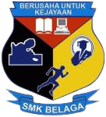
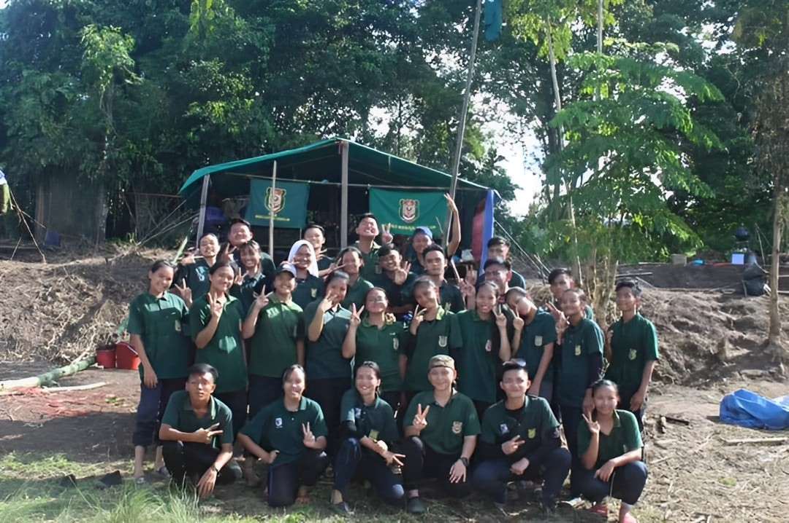
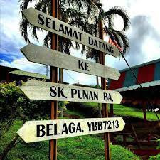

Sekolah Menengah Kebangsaan Belaga or known as SMK BELAGA is located at Belaga, Sarawak. I spent my high school year here from the age of 13 to 17 years old from 2016 to 2020. Most of the students here are from different races and the most amazing thing about this is that I can learn their language and practice it. So, I can say I can understand what my friend says to me even in their language and I will reply to them in Bahasa Melayu. It takes almost 3 hours from my village to go to my high school using boat express. I also stay at a hostel during my high school year. Every year once the celebration day comes such as Hari Raya, Hari Gawai, or Christmas the school authority will organize an event where students who stay at the hostel will feast and perform a show.
Extracurricular Activity

I was enrolled in Kadet Remaja Sekolah as my extracurricular activity. This extracurricular activity is only on Friday afternoon after the class and we will gather at a special place that has been designated for KRS we will be placed in the dining hall for hostel students. The hall is big enough to accommodate all of the KRS members. We will run the activities that have been set for each week as discussed by the Supreme Council of KRS and the advisory teacher. Among the activities that are usually carried out are foot parades, knots and ties, and others. As for the photo on the left, this was taken during a camping activity that is conducted once every year. Every uniformed unit will send around 30 members to join the camping. There is a lot of activity during the camping such as cultural night where we have to perform a dance or sing or even act depending on the vote that has been made by the leader. I still remember clearly during this particular camping it was raining cats and dogs until the last day of the camping activity and I have to sleep in a soaked shirt for a whole night. It was an awful day but at least we won third place and that makes me happy. Hurrah to Kadet Remaja Sekolah!
Kadet Remaja Sekolah Song
Primary School

Sekolah Kebangsaan Punan Ba is located at Belaga Sarawak and the nearest town is Pekan Belaga and Pekan Kapit. Most of the students that attend this primary school here are from the nearby village. I spent my childhood year from the age of 6-year-old until 12 years old before I attend high school. My home is quite far from the school compound and it takes around 30 to 45 minutes to walk from my home to school. So because of this, I prefer to stay at a hostel and go back home during the school holiday. I had a lot of good memories when attending this primary school because this where I learn about new things, representing the school in sports programs and dance events even though I didn't win anything but it was something precious and totally worth it. And let's not forget about how excited I am to finally finish primary school and attend high school.
Univeristy
I currently studying at Universiti Teknologi Mara or famously known as UiTM located in Sungai Petani Kedah which is one of its many branches. I majored in Diploma in Library Management in my last sem before I graduate in late August this year. I started my diploma journey in 2021 during the Covid-19 pandemic and went to the campus in my second semester. It was my first time coming to Peninsular Malaysia and it was really an amazing experience. I finally meet my classmate face to face after just seeing their face through Google Meet during class sessions and group assignments. I met a lot of friends from different states due to this diploma only in UiTM Sungai Petani but the degree is available in other places like UiTM Puncak Alam and UiTM Rembau. I learn a lot during my time here and the most crucial thing is that it helped me to be more responsible and independent in everything I do. I participate in university programs and activities and what makes excited me is that I have a chance to organize programs. As a university student that is my biggest achievement because the experience is different from high school and primary school experience. Life as a university student is not easy, I have to fend for myself especially since I am really far from home.